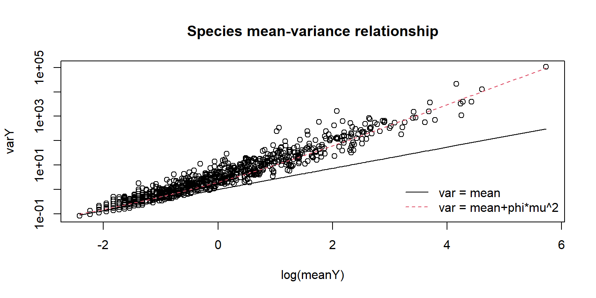
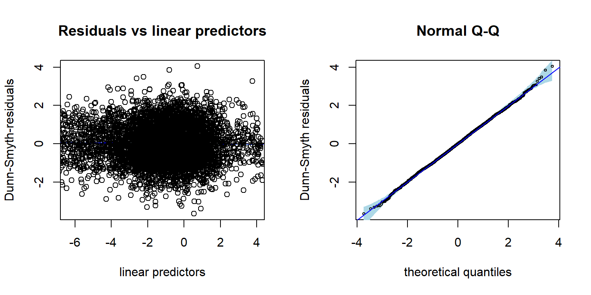
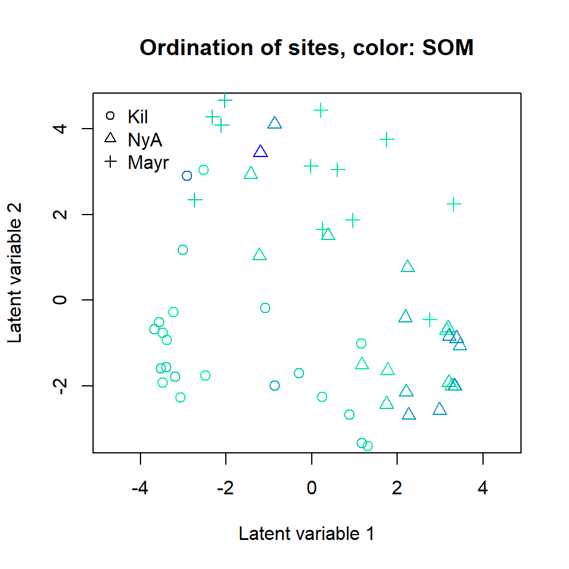
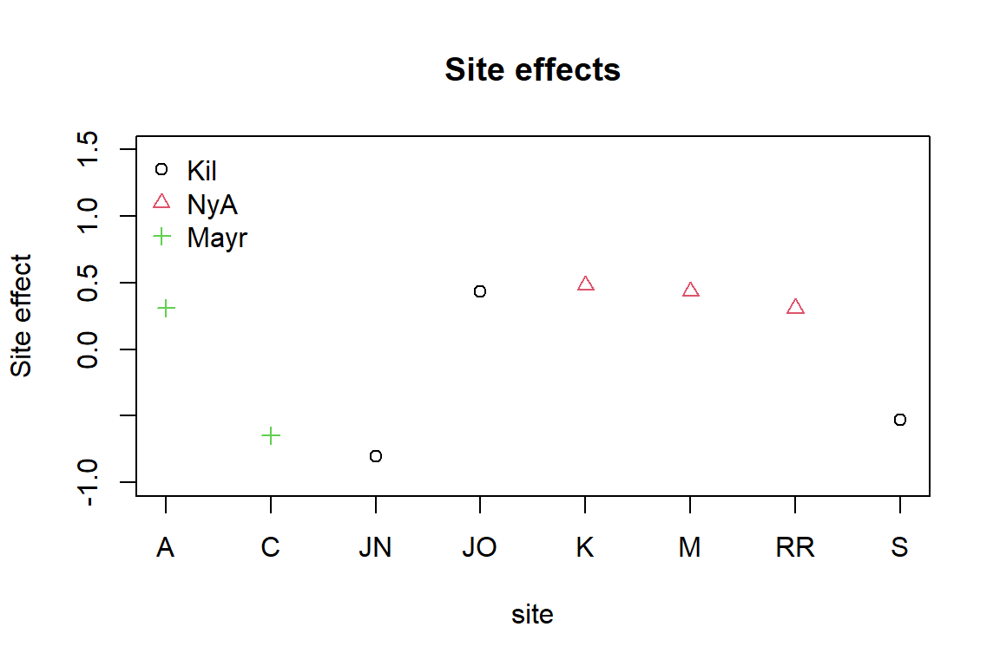
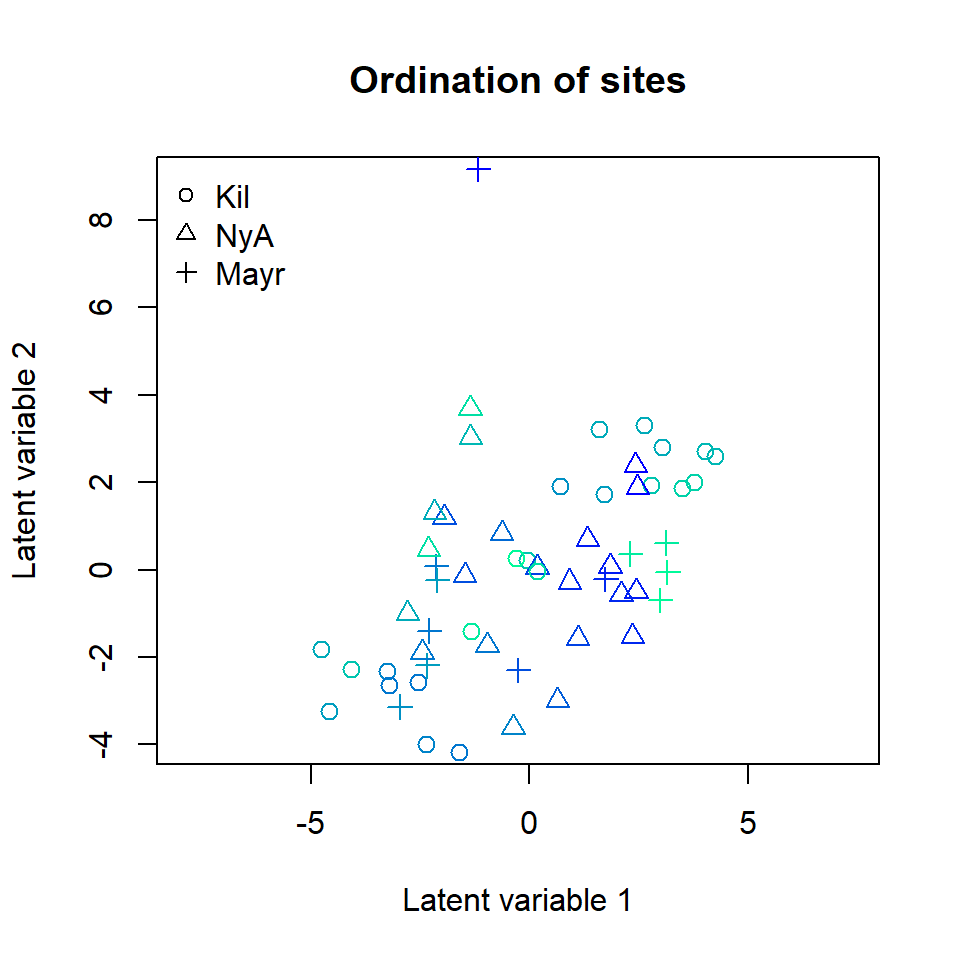

Analysing high-dimensional microbial community data using gllvm
Jenni Niku
2025-07-21
Source:vignettes/vignette2.rmd
vignette2.rmdIn this example we apply generalized linear latent variable model
(GLLVMs) on the bacterial species data discussed in Nissinen, Mannisto, and van Elsas (2012). The
sequence data is published in European Nucleotide Archive with the
project number PRJEB17695. The subset of the data used in our analyses
is included in the gllvm package. This example follows the one provided
in Niku et al. (2017), except that here we
use variational approximation method to fit GLLVMs instead of the
Laplace approximation method. Altogether eight different sampling sites
were selected from three locations. Three of the sites were in
Kilpisjarvi, Finland, three in Ny-Alesund, Svalbard, Norway, and two in
Mayrhofen, Austria. From each sampling site, several soil samples were
taken and their bacterial species were recorded. The data consist of
bacterial species counts measured from
sites. The sites can be considered as independent from each other since
bacterial communities are known to be very location specific. In
addition to bacteria counts, three continuous environmental variables
(pH, available phosphorous and soil organic matter) were measured from
each soil sample. The data set is available in object Ysoil
and the environmental variables and information regarding the sampling
sites are given in object Xenv. In addition to
environmental variables, Xenv contains information from the
sampling location (Region), sampling site at each region
(Site) and soil sample type (Soiltype, top
soil (T) or bottom soil (B)). Using GLLVMs we try to find out if soils
physico-chemical properties or region affect the structure of bacterial
communities. The package and the dataset can be loaded along the
following lines:
## Loading required package: TMB##
## Attaching package: 'gllvm'## The following object is masked from 'package:stats':
##
## simulate## [1] 56 985
head(Xenv, 3)## SOM pH Phosp Region Site Soiltype
## AB2 0.01 6.70 2.63 Aus A B
## AB3 0.01 6.67 2.16 Aus A B
## AB4 0.00 8.19 0.62 Aus A BLet’s take a look at the means and variances of the species counts:
meanY <- apply(Ysoil,2, mean)
varY <- apply(Ysoil,2, var)
plot(log(meanY),varY, log = "y", main = "Species mean-variance relationship")
points(log(sort(meanY)), sort(meanY), type = "l")
points(log(sort(meanY)), sort(meanY+ 1*meanY^2), type = "l", col=2, lty=2)
legend("bottomright", lty=1:2, legend = c("var = mean", "var = mean+phi*mu^2"), bty="n", col = 1:2) As species variances increases faster than mean, it is a clear indication of the overdispersion in the data.
In order to study if the effect of environmental variables is seen in
an unconstrained ordination plot, we first consider a GLLVM with two
latent variables and no predictors, and constructed an ordination plot
based on the predicted latent variables. For count data with
overdispersion we consider here the negative binomial (NB) distribution.
We also include random effects for sites in order to account for the
differences in site totals. This can be done by defining the structure
for community level random row effects in an argument
row.eff and including a data frame with ‘Site’ variable as
factor to an argument ‘studyDesign’. Note that in the examples we
consider below we don’t necessarily need standard errors for the
parameters for this specific model so we define
sd.errors = FALSE in the function call. When needed,
standard errors can also be calculated afterwards using function
se.
sDesign<-data.frame(Site=Xenv$Site)
ftNULL <- gllvm(Ysoil, studyDesign = sDesign, family = "negative.binomial", row.eff = ~(1|Site), num.lv = 2, sd.errors = FALSE)The print of the model object:
ftNULL## Call:
## gllvm(y = Ysoil, X = data.frame(Site = Xenv$Site), num.lv = 2,
## family = "negative.binomial", row.eff = ~(1 | Site), sd.errors = FALSE)
## family:
## [1] "negative.binomial"
## method:
## [1] "VA"
##
## log-likelihood: -59822.73
## Residual degrees of freedom: 52197
## AIC: 125571.5
## AICc: 125908
## BIC: 151995.5Using the residual diagnostic plot we can check that the chosen NB
distribution is suitable for the data at hand. The Dunn-Smyth residuals
given by the NB model are normally distributed around zero, thus
supporting the choice. Using argument n.plot we can choose
a number of randomly selected species to be plotted in order to make any
patterns in the residual plots more apparent. This can be useful
argument when data is high-dimensional.

The ordination of sites based on the fitted negative binomial GLLVM
can be plotted using function ordiplot. The sites can be
colored according to their environmental variable values,
pH, SOM and phosp using an
argument s.colors. In addition, the ordination points are
labeled according to the sampling location (Kilpisjarvi, Ny-Alesund and
Innsbruck). This can be done by setting symbols = TRUE and
defining the symbols for each site using argument pch, see
below:
# Define colors according to the values of pH, SOM and phosp
library(grDevices)
ph <- Xenv$pH
rbPal <- colorRampPalette(c('mediumspringgreen', 'blue'))
Colorsph <- rbPal(20)[as.numeric(cut(ph, breaks = 20))]
breaks <- seq(min(ph), max(ph), length.out = 30)
som <- Xenv$SOM
Colorssom <- rbPal(20)[as.numeric(cut(som, breaks = 20))]
breaks <- seq(min(som), max(som), length.out = 30)
phosp <- Xenv$Phosp
Colorsphosp <- rbPal(20)[as.numeric(cut(phosp, breaks = 20))]
breaks <- seq(min(phosp), max(phosp), length.out = 30)
# Define symbols for different sampling locations:
pchr = NULL
pchr[Xenv$Region == "Kil"] = 1
pchr[Xenv$Region == "NyA"] = 2
pchr[Xenv$Region == "Aus"] = 3
# Ordination plots. Dark color indicates high environmental covariate value.
ordiplot(ftNULL, main = "Ordination of sites, color: pH",
symbols = TRUE, pch = pchr, s.colors = Colorsph)
legend("topleft", legend = c("Kil", "NyA", "Mayr"), pch = c(1, 2, 3), bty = "n")
ordiplot(ftNULL, main = "Ordination of sites, color: SOM",
symbols = TRUE, pch = pchr, s.colors = Colorssom)
legend("topleft", legend = c("Kil", "NyA", "Mayr"), pch = c(1, 2, 3), bty = "n")
ordiplot(ftNULL, main = "Ordination of sites, color: phosphorous",
symbols = TRUE, pch = pchr, s.colors = Colorsphosp)
legend("topleft", legend = c("Kil", "NyA", "Mayr"), pch = c(1, 2, 3), bty = "n")A clear gradient in the pH values of sites is observed, whereas there
is less evidence of such pattern with the two other soil variables. It
is also clear that the three sampling locations differ in terms of
species composition. Standard deviation for the random site effects can
be extracted by ftNULL$params$sigma. By plotting the
predicted random site effects, we can possibly see differences in
sampling intensity of the eight sites.
# Sampling locations of the eight sampling sites:
locaSites<-c(3,3,1,1,2,2,2,1)
plot(ftNULL$params$row.params, xlab = "site", col = locaSites, pch = locaSites,
main = "Site effects", ylab = "Site effect", xaxt = 'n', ylim = c(-1,1.5))
axis(1, at=1:8, labels=levels(sDesign$Site))
legend("topleft", legend = c("Kil", "NyA", "Mayr"), pch = c(1, 2, 3),
col = c(1, 2, 3), bty = "n")
Next we produce a biplot based on GLLVM. Below, column indices of the 15 species with largest factor loadings are added in the (rotated) ordination plot. The biplot suggests a small set of indicator species which prefer sites with low pH values and a larger set of indicator species for high pH sites.
# Plot the species using column indices of the species:
rownames(ftNULL$params$theta) <- 1:ncol(Ysoil)
ordiplot(ftNULL, main = "Ordination of sites and species", xlim = c(-6, 5),
ylim = c(-4, 4), symbols = TRUE, pch = pchr, s.colors = Colorsph,
biplot = TRUE, ind.spp = 15, cex.spp = 0.9)
legend("topleft", legend = c("Kil", "NyA", "Mayr"), pch=c(1, 2, 3), bty = "n")In order to study if pH value alone is capable of explaining the variation in species composition across sites, we included it as explanatory variable in the GLLVM. When the Poisson distribution performed so poorly on the null model, we consider only NB GLLVMs in the following examples.
# Scale environmental variables
Xsoils <- scale(Xenv[, 1:3])
ftXph <- gllvm(Ysoil, X = Xsoils, studyDesign = sDesign, formula = ~pH, family = "negative.binomial",
row.eff = ~(1|Site), num.lv = 2)
ftXph## Call:
## gllvm(y = Ysoil, X = Xsoils, formula = ~pH, num.lv = 2, family = "negative.binomial",
## row.eff = ~(1 | Site))
## family:
## [1] "negative.binomial"
## method:
## [1] "VA"
##
## log-likelihood: -58976.08
## Residual degrees of freedom: 51212
## AIC: 125848.2
## AICc: 126457
## BIC: 161056.4Ranked point estimates with 95% confidence intervals are plotted
below using function coefplot and indicate that pH value
strongly affects to the species composition as so many of the confidence
intervals do not contain zero value (black). The species names are not
informative in the coefficient plot when the number of species is so
large and can be removed using an argument y.label.
coefplot(ftXph, cex.ylab = 0.5, y.label = FALSE)The corresponding ordination plot given below indicates that the gradient in the pH values of the sites vanishes, but the ordination still exhibits a sampling location effect. In particular, several Kilpisjarvi sites seem to differ what comes to the bacterial species composition and all Mayrhofen sites are located at the top of the ordination.
ordiplot(ftXph, main = "Ordination of sites",
symbols = TRUE, pch = pchr, s.colors = Colorsph)
legend("topleft", legend = c("Kil", "NyA", "Mayr"), pch = c(1, 2, 3), bty = "n")Next we include all environmental variables as explanatory variables in the GLLVM.
ftX <- gllvm(Ysoil, X = Xsoils, studyDesign = sDesign, family = "negative.binomial", row.eff = ~(1|Site), num.lv = 2)
ftX## Call:
## gllvm(y = Ysoil, X = Xsoils, num.lv = 2, family = "negative.binomial",
## row.eff = ~(1 | Site))
## family:
## [1] "negative.binomial"
## method:
## [1] "VA"
##
## log-likelihood: -57178.88
## Residual degrees of freedom: 49242
## AIC: 126193.8
## AICc: 127616.5
## BIC: 178970.5The information criteria for the model with all covariates were worse than for the model with only pH as a covariate. Below, point estimates with 95% confidence intervals below indicate that pH value is the main covariate affecting the species composition.

The corresponding ordination plot given below is very similar to the ordination plot of the model which includes only pH value as a covariate, and the ordination still exhibits a sampling location effect.
ordiplot(ftX, main = "Ordination of sites",
symbols = TRUE, pch = pchr, s.colors = Colorsph)
legend("topleft", legend = c("Kil", "NyA", "Mayr"), pch = c(1, 2, 3), bty = "n")To account for this we add the sampling location as a categorical covariate into the model.
Xenv <- data.frame(Xsoils, Region = factor(Xenv$Region),
Soiltype = factor(Xenv$Soiltype))
ftXi <- gllvm(Ysoil, X = Xenv, studyDesign = sDesign, formula = ~ SOM + pH + Phosp + Region,
family = "negative.binomial", row.eff = ~(1|Site), num.lv = 2,
sd.errors = FALSE)
ftXi## Call:
## gllvm(y = Ysoil, X = Xenv, formula = ~SOM + pH + Phosp + Region,
## num.lv = 2, family = "negative.binomial", row.eff = ~(1 |
## Site), sd.errors = FALSE)
## family:
## [1] "negative.binomial"
## method:
## [1] "VA"
##
## log-likelihood: -54759.57
## Residual degrees of freedom: 47272
## AIC: 125295.1
## AICc: 127928
## BIC: 195640.3The resulting ordination plot shows that there is no more visible pattern in sampling location.
ordiplot(ftXi, main = "Ordination of sites",
symbols = TRUE, pch = pchr, s.colors = Colorsph)
legend("topleft", legend = c("Kil", "NyA", "Mayr"), pch = c(1, 2, 3), bty = "n")
When comparing nested models, in particular, the model with
environmental covariates to the null model, variance explained can be
quantified by using methods like extensions of pseudo R2. For example,
below we compare the total covariation in the ftNULL and
ftX based on the traces of the residual covariance
matrices. This suggests that environmental variables explain 43% of the
total covariation.
1 - getResidualCov(ftX)$trace/getResidualCov(ftNULL)$trace## [1] 0.4391057